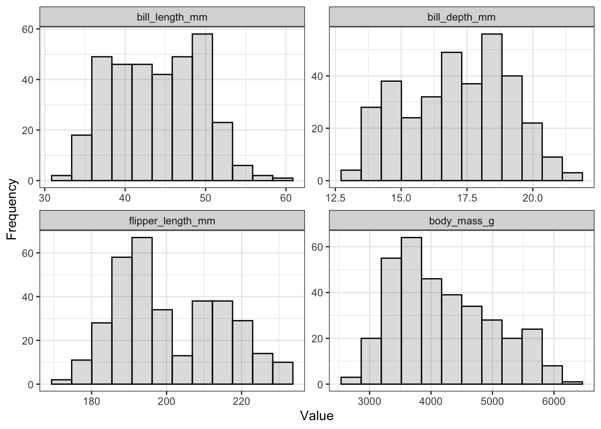
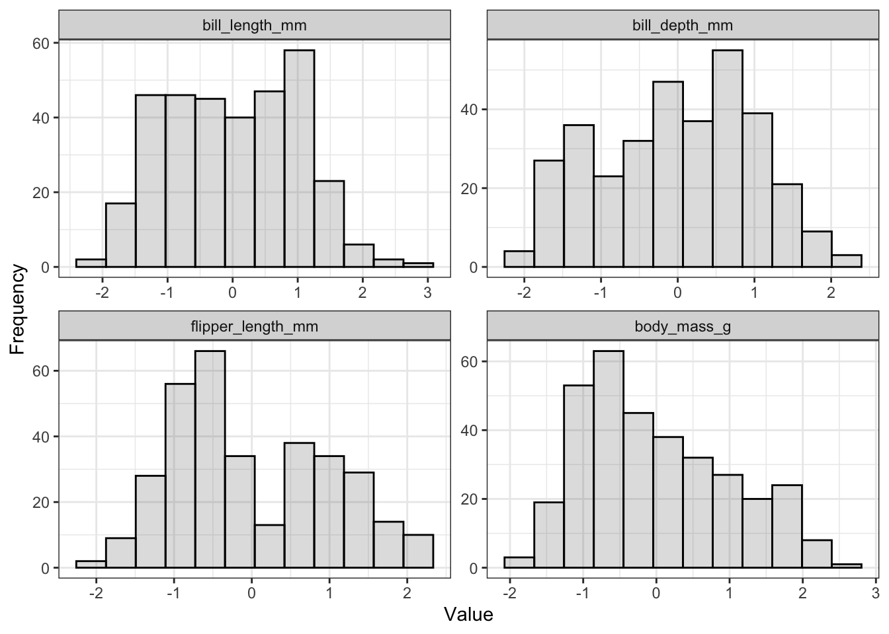
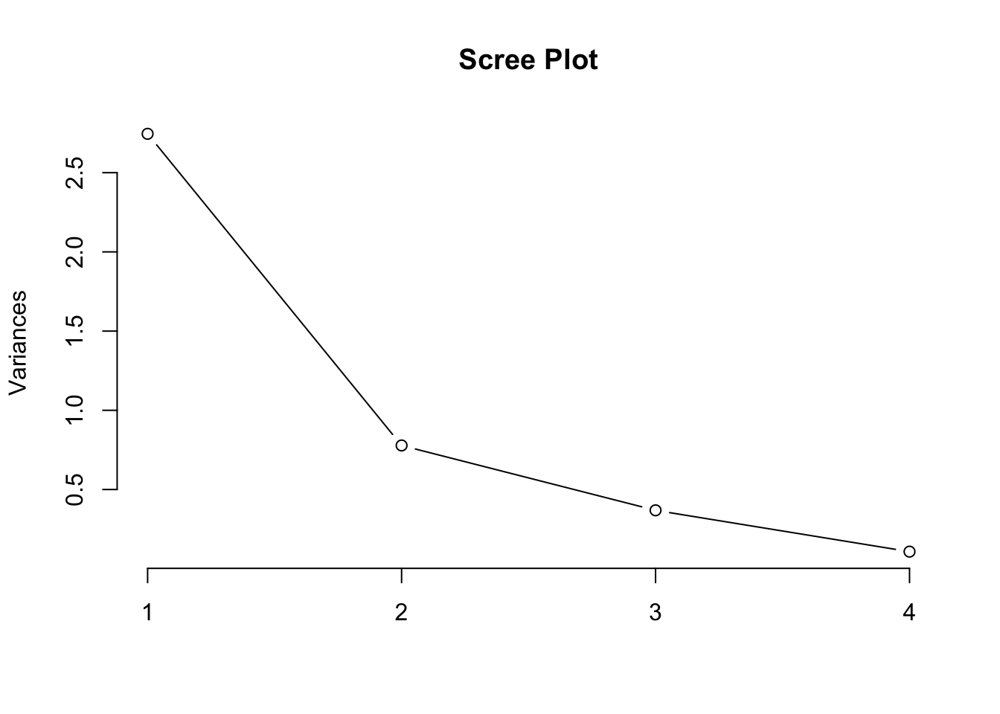
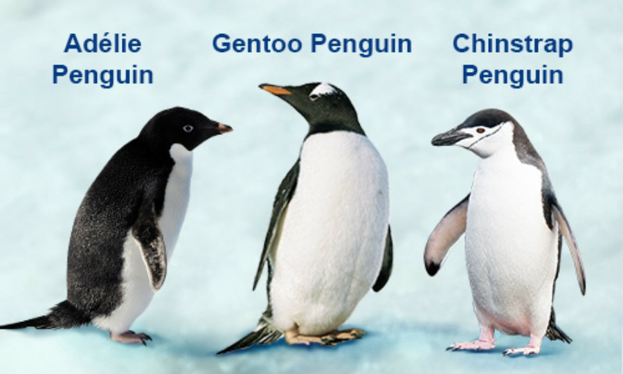

── Attaching core tidyverse packages ──────────────────────── tidyverse 2.0.0 ──
✔ dplyr 1.1.4 ✔ readr 2.1.5
✔ forcats 1.0.0 ✔ stringr 1.5.1
✔ ggplot2 4.0.0 ✔ tibble 3.2.1
✔ lubridate 1.9.3 ✔ tidyr 1.3.1
✔ purrr 1.0.2
── Conflicts ────────────────────────────────────────── tidyverse_conflicts() ──
✖ dplyr::filter() masks stats::filter()
✖ dplyr::lag() masks stats::lag()
ℹ Use the conflicted package (<http://conflicted.r-lib.org/>) to force all conflicts to become errors
library(reshape2)
Attaching package: 'reshape2'
The following object is masked from 'package:tidyr':
smiths
a <- penguins
The penguins dataset involves 344 observations, where each row is a penguin. For each penguin, we have some demographic information (e.g., the island where it was measured). We also have four columns of numeric data that represent each penguins’ measurements:
bill_length_mm: Length of the penguin’s bill
bill_depth_mm: “height” of the penguin’s bill
flipper_length_mm: Length of the penguin’s flippers
body_mass_g: Weight of the penguin in grams
We will use these four numeric columns to construct a PCA.
Exploratory Data Analysis
It is always a good idea to explore a new dataset a bit before beginning analysis.
Have a look at the data:
knitr::kable(head(a))
species
island
bill_length_mm
bill_depth_mm
flipper_length_mm
body_mass_g
sex
year
Adelie
Torgersen
39.1
18.7
181
3750
male
2007
Adelie
Torgersen
39.5
17.4
186
3800
female
2007
Adelie
Torgersen
40.3
18.0
195
3250
female
2007
Adelie
Torgersen
NA
NA
NA
NA
NA
2007
Adelie
Torgersen
36.7
19.3
193
3450
female
2007
Adelie
Torgersen
39.3
20.6
190
3650
male
2007
Notice that there are some missing values in this dataset.
Seeing values of NA is common in real-world analysis settings.
We will have to do something about this during our analysis as we cannot compute correlations for columns that contain NA values
Warning: Removed 8 rows containing non-finite outside the scale range
(`stat_bin()`).

The histograms show us the range of each variable and the distribution of data.
Notice that the measurements for weight are much larger numeric values than the other variables.
For PCA, we wouldn’t want a column that happens to have larger values to dominate the analysis, so we need to standardize each column to have a mean value of 0 and a standard deviation of 1.
Standardize Variables
We can use the built in scale function to standardize variables. However, we cannot pass the entire dataframe to scale because some columns contain character strings. Only numeric columns can be transformed using scale. In the code below, I overwrote the numeric columns one at a time instead.
b <- a %>%na.omit()b$bill_length_mm <-scale(b$bill_length_mm)b$bill_depth_mm <-scale(b$bill_depth_mm)b$flipper_length_mm <-scale(b$flipper_length_mm)b$body_mass_g <-scale(b$body_mass_g)knitr::kable(head(b))
species
island
bill_length_mm
bill_depth_mm
flipper_length_mm
body_mass_g
sex
year
Adelie
Torgersen
-0.8946955
0.7795590
-1.4246077
-0.5676206
male
2007
Adelie
Torgersen
-0.8215515
0.1194043
-1.0678666
-0.5055254
female
2007
Adelie
Torgersen
-0.6752636
0.4240910
-0.4257325
-1.1885721
female
2007
Adelie
Torgersen
-1.3335592
1.0842457
-0.5684290
-0.9401915
female
2007
Adelie
Torgersen
-0.8581235
1.7444004
-0.7824736
-0.6918109
male
2007
Adelie
Torgersen
-0.9312674
0.3225288
-1.4246077
-0.7228585
female
2007
The values in the numeric columns have been adjusted.
We could also run summary statistics to ensure that the transformed variables are standardized in the way that we want them:
Warning: attributes are not identical across measure variables; they will be
dropped

Notice how the shapes of the distributions are the same as above when I plotted the raw data
Transforming a variable will not change the shape of the distribution! Only the x-axis is re-scaled.
Notice that now, the distributions for each varaible center around 0 and have a range of approximately -2 to +2.
Now that all of the variables are on the same scale, they are ready to be used in PCA.
Make correlation matrix:
Before computing the PCA, it is useful to generate a correlation matrix to get a feel for which variables covary. This is especially useful when working with many columns of data.
Notice that the correlations are exactly the same as above
Transforming the variables does not alter the nature of the relationships between them (just as it did not alter the nature of the distributions when we made histograms)
Run PCA
In order to compute the PCA we must first select only the numeric columns that will be used. I will assign a new object c that drops the other four columns in the data that contain demographic information.
c <- b[ ,c(3:6)]pca_res <-prcomp(c)summary(pca_res)
Importance of components:
PC1 PC2 PC3 PC4
Standard deviation 1.6569 0.8821 0.60716 0.32846
Proportion of Variance 0.6863 0.1945 0.09216 0.02697
Cumulative Proportion 0.6863 0.8809 0.97303 1.00000
The first principal component accounts for 68% of variance in the data
The second principal component accounts for an additional 19% of variance (so the combination of the first and second PCs account for 88% of variance)
Choose How Many PCs to Retain
We typically don’t want to look at all of the principal components that the model generates. Instead, we want to select to top few for further investigation. Selecting the first 2-3 is often a good way to balance simplicity and explanatory power. One way that we can visualzie how much explanatory power each PC adds is to generate the Scree plot:
plot(pca_res, type ="l", main ="Scree Plot")

The quick n dirty base R scree plot shows that the first principal component explains the most variance, the second also seems to have reasonable explanatory power, and that the 3rd and 4th PCs don’t add much more.
I also showed you some more complex code in lecture that can be used to better visualize the variance explained by each PC:
The two variables related to bill measurements (length and depth) have strong negative relationships to the second PC
The other to variables (weight and flipper length) have very small negative relationships to PC2 as well.
PC2 seems to capture bill characteristics
Plot the Raw Data in PC Space
The two principal components that I selected for further investigation represent new “axes” that capture a summary of the original variables entered. To visualize how the raw data map to this space, we can generate a two dimensional plot where PC1 is mapped to the x-axis and PC2 is plotted on the y-axis. We can then add datapoints for all the individual penguins and see how they map to our two-dimensional PCA.
This looks great! It seems that the variance capture by PC1 separates Gentoo penguins from the other two species in the dataset.
PC2 then separates the Adelie and Chinstrap penguins, although this separation is not as clean as we see in PC1 (i.e., there is still lots of overlap between the pink and green points.)
When I look up a photo of the three species of penguins, the Gentoo species does indeed seem larger than the other two types:

When I look up a photo of the three species of penguins, the Gentoo species does indeed seem larger than the other two types
This confirms my interpretation of what PC1 represents: It seems to be related to overall penguin size.
We can also test whether the other demographic factors contained in the dataset might be related to the second PC. I might next map the sex variable to colour to see whether male and female penguins differ on either PC axis.
This plot nicely shows that within each species, PC2 seems to be separating male and female penguins based on sex differences in bill characteristics.
Summary of Analyses
The PCA uncovered latent structure in the data: Gentoo penguins tend to be larger than the other two species, and this variance was captured by PC1. For all species of penguins, there are sex-specific bill characteristics, which were captured by PC2.
Note: I know that many of you are interested in putting together personal portfolios to support your resumes. This practice is common in data science, and it is a good idea to build up / maintain a personal portfolio that showcases your analysis skills. Something like what I’ve written here would constitute a perfectly respectable portfolio project. I note this to highlight that especially when you’re developing your portfolio from scratch, a project like this one (which could be put together in about 2 hours total) is great. You could also apply this same process to any other dataset that interests you as a portfolio project! :)